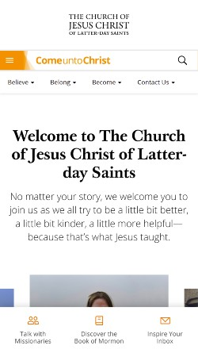
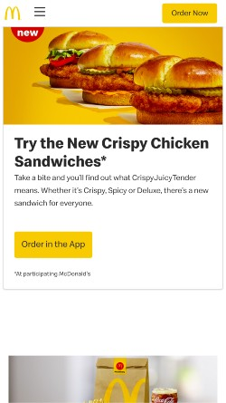
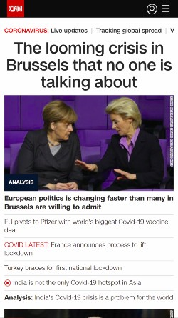

The website adopts the design principle of alignment. The title welcome message and the subtitle are both aligned vertically thereby presenting welcom information in an orderly manner.
PARC: Proximity
MacDonalds
MacDonalds The principle of proximity is applied on this website. Pictures of burgers grouped together shows organisaton, the invitation to take a bite and further description goes well together.
PARC: Contrast
CNN News International
CNN The CNN news website is a good application of contrast design principle. The banner and main section contents are placed against contrasting background making it easy to read.